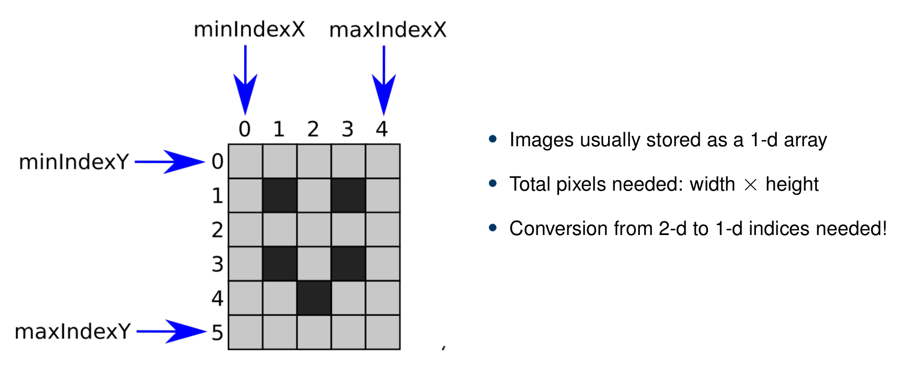
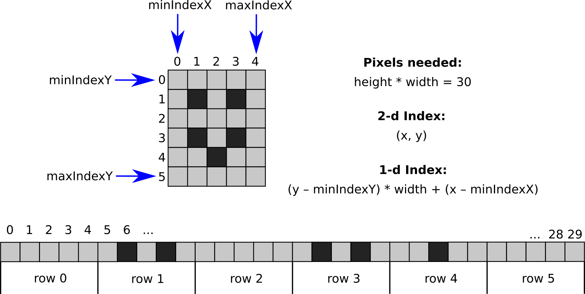
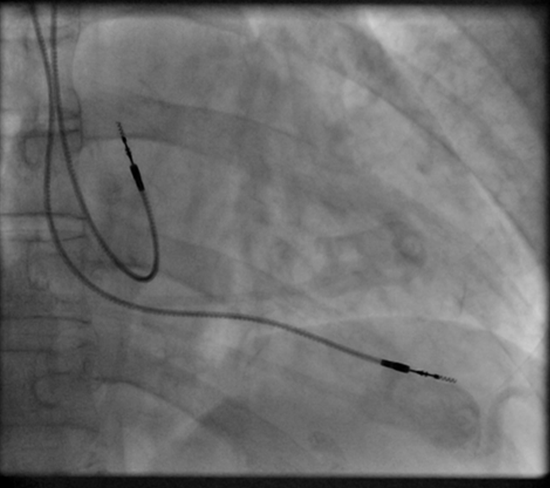
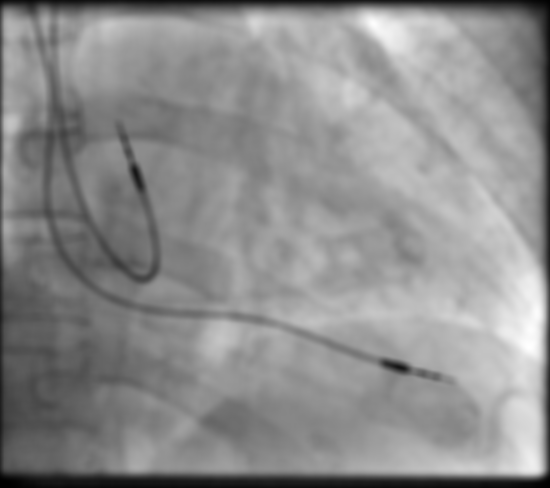
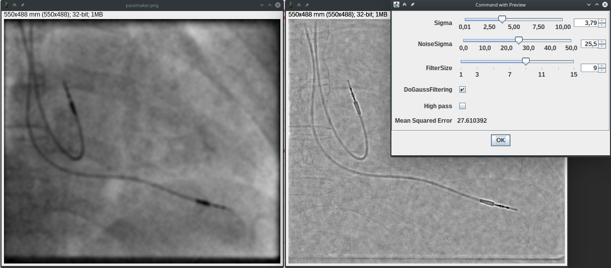

Submission deadline: 25.05.20 23:59h
Please ensure that all files you created also contain your name and your IDM ID and also your partner's name and IDM ID if you're not working alone.
Each exercise has 10 points. You have to achieve 30 of 60 points in six homework exercises to pass the module.
Images and 2-d Convolution
In this exercise, we finally to work with images. It's time to update the file src/main/java/lme/DisplayUtils.java to the newest version.
This should provide you the following methods to work with images:
// Open a file
public static mt.Image openImage(String path)
// Download and open a file from the internet
public static mt.Image openImageFromInternet(String url, String filetype)
// Save an image to a file
public static void saveImage(mt.Image image, String path)
// Show images
public static void showImage(float[] buffer, String title, int width)
public static void showImage(float[] buffer, String title, long width, float[] origin, double spacing, boolean replaceWindowWithSameName)
They all work with the class mt.Image so let's create it!
Before that, add the following two methods to your Signal class (they are used by the tests of this exercise):
// Needs: import java.util.Random
public void addNoise(float mean, float standardDeviation) {
Random rand = new Random();
for (int i = 0; i < buffer.length; i++) {
buffer[i] += mean + rand.nextGaussian() * standardDeviation;
}
}
public void setBuffer(float[] buffer) {
this.buffer = buffer;
}
PS: The method addNoise is also useful to test your mean and standardDeviation calculation in exercise 2.
Create a long signal and add noise with a specific mean and standardDeviation.
The result of your mean and standardDeviation method should be approximatelly the same.
mt/Image.java
4 Points
The code for this section should go to src/main/java/mt/Image.java
Our goal is to share as much code with our mt.Signal class. So mt.Image will be a subclass of mt.Signal.
// <your name> <your idm>
// <your partner's name> <your partner's idm> (if you submit with a group partner)
package mt;
import lme.DisplayUtils;
public class Image extends Signal {
}
mt.Image has five members (apart from the ones inherited by mt.Signal).
// Dimensions of the image
protected int width;
protected int height;
// Same as Signal.minIndex but for X and Y dimension
protected int minIndexX;
protected int minIndexY;
// For exercise 4 (no need to do anything with it in exercise 3)
protected float[] origin = new float[]{ 0, 0 };
And two constructors:
// Create an image with given dimensions
public Image(int width, int height, String name)
// Create an image with given dimensions and also provide the content
public Image(int width, int height, String name, float[] pixels)
As shown in the exercise slides, we will store all the pixels in one array, like we did in Signal.
The array should have the size width * height.
minIndexX,minIndexY should be 0 for normal images.

Call the constructors of the super class Signal in the constructors of Image.
You can call the constructor of a super class by placing super(...) with the respetive arguments in the first line of the constructor of the subclass.
The constructor public Image(int width, int height, String name, float[] pixels) does not need to create its own array (take pixels for buffer).
But you can check whether pixels has the correct size.
Let's also provide some getters!
// Image dimensions
public int width()
public int height()
// Minimum and maximum indices (should work like Signal.minIndex/maxIndex)
public int minIndexX()
public int minIndexY()
public int maxIndexX()
public int maxIndexY()
atIndex and setAtIndex should work like in Signal except that they now have two coordinate indices.
atIndex should return 0.0f if either the x or y index are outside of the image ranges.
public float atIndex(int x, int y)
public void setAtIndex(int x, int y, float value) {
Remember how we calculated the indices in the exercise slides. You have to apply that formula in atIndex/setAtIndex.

Add the method show to display the image
public void show() {
DisplayUtils.showImage(buffer, name, width(), origin, spacing(), /*Replace window with same name*/true);
}
Open the image pacemaker.png in a file src/main/java/exercise/Exercise03 (in the same project as previous exercise):
// <your name> <your idm>
// <your partner's name> <your partner's idm> (if you submit with a group partner)
package exercises;
import mt.GaussFilter2d;
import mt.Image;
public class Exercise03 {
public static void main(String[] args) {
(new ij.ImageJ()).exitWhenQuitting(true);
Image image = lme.DisplayUtils.openImageFromInternet("https://mt2-erlangen.github.io/pacemaker.png", ".png");
image.show();
}
}
The image is from our open access book.

mt.ImageFilter
3 Points:
Like in Exercise 1, we want to be able to convolve our image signal.
Infact, we will learn a lot of new ways to process images.
Often, we need to create an output image of same size.
Let's create an interface (src/main/java/mt/ImageFilter.java) for that, so we only need to implement this once.
package mt;
public interface ImageFilter {
default mt.Image apply(mt.Image image) {
Image output = new Image(image.width(), image.height(), image.name() + " processed with " + this.name());
apply(image, output);
return output;
}
default void apply(mt.Image input, mt.Image output) {
throw new RuntimeException("Please implement this method!");
}
String name();
}
The code for the convolution should go to src/main/java/mt/LinearImageFilter.java
Ok. Now the convolution. The class has already a method that we will need later. It uses your sum method.
// <your name> <your idm>
// <your partner's name> <your partner's idm> (if you submit with a group partner)
package mt;
public class LinearImageFilter extends Image implements ImageFilter {
public void normalize() {
double sum = sum();
for (int i = 0; i < buffer.length; i++) {
buffer[i] /= sum;
}
}
}
Create a constructor for it. Recall how we implemented LinearFilter!
minIndexX and minIndexY need to be set to $-\lfloor L_x/2 \rfloor$ and $-\lfloor L_y/2 \rfloor$ when $L_x$ is the
filter's width and $L_y$ the filter's height.
public LinearImageFilter(int width, int height, String name)
Convolution in 2-d works similar to convolution in 1-d.
$$K_x = \lfloor L_x/2 \rfloor$$ $$K_y = \lfloor L_y/2 \rfloor$$ $$g[x,y] = \sum_{y'=-K_y}^{+K_y} \sum_{x'=-K_x}^{+K_x} f[x-x', y-y'] \cdot h[ x', y' ] $$ $$g[x,y] = \sum_{y'=\text{h.minIndexY}}^{\text{h.maxIndexY}} \sum_{x'=\text{h.minIndexX}}^{\text{h.maxIndexX}} f[x-x', y-y'] \cdot h[ x', y' ] $$
Remember to use atIndex and setAtIndex to get and set the values.
Implement the convolution in the method apply.
The result image was already created by our interface ImageFilter.
public void apply(Image image, Image result)


Source: https://github.com/vdumoulin/conv_arithmetic
Now it's time to test!
Use the file src/test/java/mt/LinearImageFilterTests.java.
Gauss Filter
2 Points
The code for the Gauss filter should go to src/main/java/mt/GaussFilter2d.java.
The Gauss filter is a LinearImageFilter with special coefficients (the filter has the same height and width).
// <your name> <your idm>
// <your partner's name> <your partner's idm> (if you submit with a group partner)
package mt;
public class GaussFilter2d extends LinearImageFilter {
}
It has the following constructor
public GaussFilter2d(int filterSize, float sigma)
In the constructor, set the coefficients according to the unormalized 2-d normal distribution with standard deviation $\sigma$ (sigma).
Math.exp is the exponetial function. Use setAtIndex: $x$ should run from minIndexX to maxIndexX and $y$ from minIndexY to maxIndexY.
$$ h[x,y] = \mathrm{e}^{-\frac{x^2+y^2}{2 \sigma^2}}$$
Call normalize() at the end of the constructor to ensure that all coefficients sum up to one.
Test your Gauss filter in Exercise03.java.
Use arbitray values for sigma and filterSize.
The Gauss filter will blur your input image clearly if you chose a large value for sigma.

There is also a unit test file that you can use: src/test/java/mt/GaussFilter2dTests.java
Calculating with Images
1 Points
The code for this section should go to src/main/java/mt/Image.java.
Implement the method Image.minus in Image.java that subtracts the current image element-wise with another one and returns the result:
public Image minus(Image other)
We use this method to calculate error images.
You can implement this with only one loop over the elements of the buffers of the two images.
Demo
This is not required for the exercise!
Place the file src/main/java/exercises/Exercise03Demo.java
in your project folder and run it.

You should see an interactive demo applying your Gauss filter to a noisy image. You change change the used parameters.
Submitting
Please ensure that all files you created also contain your name and your IDM ID and also your partner's name and IDM ID if you're not working alone.
Then, compress your source code folder src to a zip archive (src.zip) and submit it on studOn.